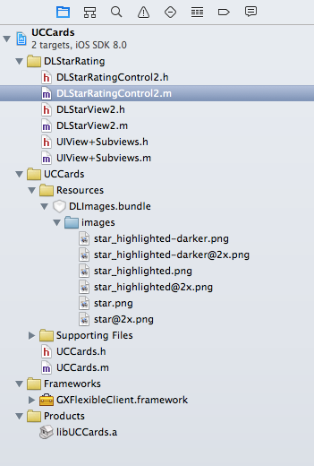

In this document we'll explain how to create an Item User Control for iOS to display the contents of an attribute or variable. To do this, we are going to create a Star Rating User Control, that displays a numeric field as a list of stars; very similar to the GeneXus SD StarRating. This is how it looks in execution:
Software requirementsTo develop user controls for iOS you'll need the following:
Steps to create the user controlThe user control has two components: a definition and an implementation. The definition is similar to the definition of the web user controls, with some minor differences. For the implementation, you'll need to program in XCode, using the Objective-C language. This document asumes you are familiar with both. DefinitionFor the definition of the control, you can start by copying an existing control definition What you'll need to do is:
<iOS_SupportFiles> <File>libUCStarRating.a</File> </iOS_SupportFiles>
<iOS_ClassName>UCStarRating</iOS_ClassName> Check the Rating.control file if you are in doubt. Implementation
[self sendActionsForControlEvents:UIControlEventValueChanged];
#import <Foundation/Foundation.h>
#import <GXFlexibleClient/GXFlexibleClient.h>
@interface UCStarRating : GXControlEditableWithLabelSingleEditorViewBase {
float _maxValue;
float _step;
}
@property (nonatomic, readonly) float maxValue;
@property (nonatomic, readonly) float step;
@end
@synthesize maxValue = _maxValue, step = _step;
- (UIView *)newEditorViewWithFrame:(CGRect)frame {
if ([self properties]) {
_maxValue = [[self properties] getPropertyValueInteger:@"@UCStarRatingMaxValue"];
_step = [[self properties] getPropertyValueInteger:@"@UCStarRatingStep"];
}
else {
_maxValue = 5;
_step = 1;
}
int cantStars = CalculateNumberOfStars(_maxValue, _step);
DLStarRatingControl2 *control = [[DLStarRatingControl2 alloc] initWithFrame:frame andStars:cantStars isFractional:NO];
control.rating = 3;
[control setAutoresizingMask:UIViewAutoresizingFlexibleWidth|UIViewAutoresizingFlexibleHeight];
[control setContentVerticalAlignment:UIControlContentVerticalAlignmentCenter];
[control addTarget:self action:@selector(valueChangedForControl:) forControlEvents:UIControlEventValueChanged];
[control setEnabled:self.enabled && !self.readOnly];
return control;
}
- (void)valueChangedForControl:(id)sender {
if ([sender isEqual:self.starRatingControl]) {
int val = self.starRatingControl.rating * self.step;
if (val > self.maxValue)
val = self.maxValue;
id<gxentitydata> entityData = [self entityData];
if ([entityData conformsToProtocol:@protocol(GXMutableEntityData)]) {
id fieldValue = [GXEntityHelper coreDataFieldValueFroFieldInfo:[[self fieldDescriptor] entityDataFieldInfo]
fromValue:[NSNumber numberWithInt:val]
];
[(id<gxmutableentitydata>)entityData setValue:fieldValue forEntityDataField:[self fieldDescriptor]];
}
}
}
#pragma mark - GXControlEditableWithLabelBase overrides
- (void)setReadOnly:(BOOL)readOnly {
[super setReadOnly:readOnly];
if ([self isEditorViewLoaded]) {
[self.starRatingControl setEnabled:!readOnly && self.enabled];
}
}
- (void)setEnabled:(BOOL)enabled {
[super setEnabled:enabled];
if ([self isEditorViewLoaded]) {
[self.starRatingControl setEnabled:enabled && !self.readOnly];
}
}
- (void)loadEntityDataFieldValue {
int value = [self.entityDataFieldValue respondsToSelector:@selector(intValue)] ? MAX(0, [self.entityDataFieldValue intValue]) : 0;
[self.starRatingControl setRating:CalculateNumberOfStars(value, self.step)];
}
+ (BOOL)isValidForDataType:(GXDataType)dataType {
return (dataType == GXDataTypeNumeric);
}
</gxmutableentitydata></gxentitydata>
- (DLStarRatingControl2 *)starRatingControl {
return (DLStarRatingControl2 *)[self loadedEditorView];
}
+ (BOOL) isValidForDataType:(GXDataType)dataType {
return (dataType == GXDataTypeNumeric);
}
- (DLStarRatingControl *) starRatingControl {
return (DLStarRatingControl *) [super editorView];
}
static int CalculateNumberOfStars(int value, int step) {
if (step == 0) return 0;
return (value / step) + (value % step == 0 ? 0 : 1);
}

star = [[UIImage imageNamed:@"star.png"] retain]; highlightedStar = [[UIImage imageNamed:@"star_highlighted.png"] retain]; to: star = [GXUtilities imageNamed:@"star.png" inBundle:@"DLImages"]; highlightedStar = [GXUtilities imageNamed:@"star_highlighted.png" inBundle:@"DLImages"];
|
| Backlinks | |
| Creating User Controls for iOS | Category:User Controls for Smart Devices |